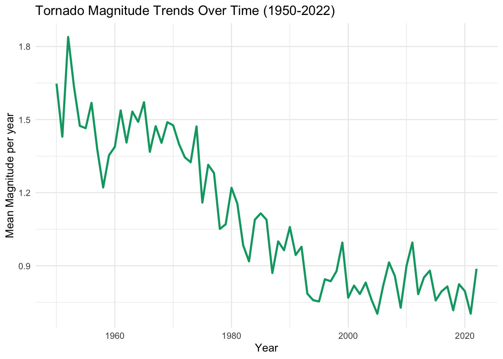
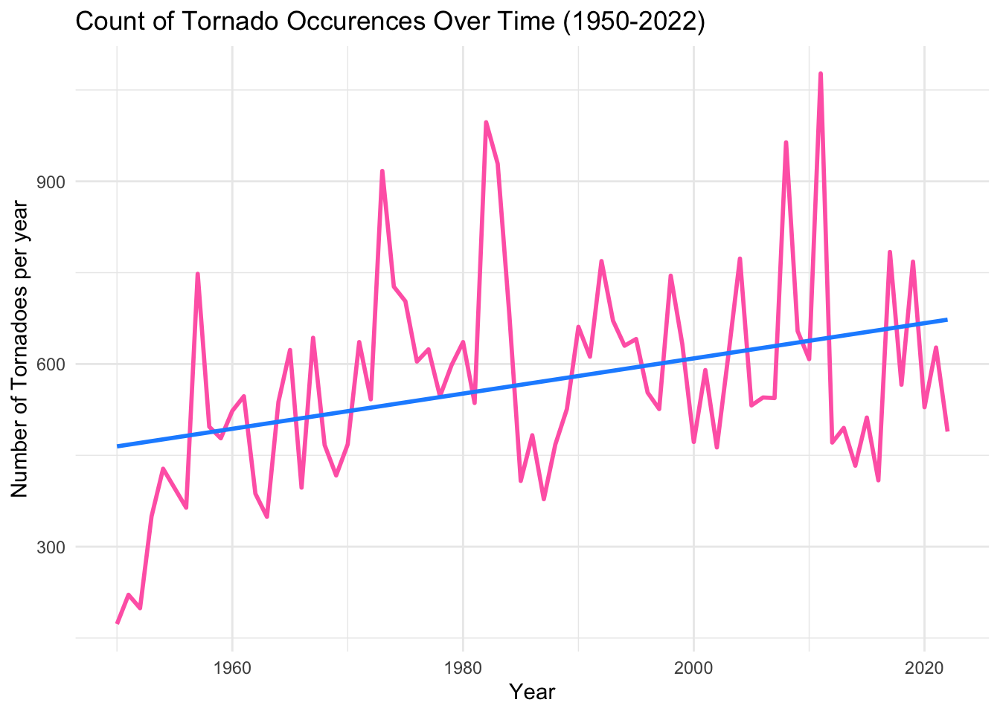
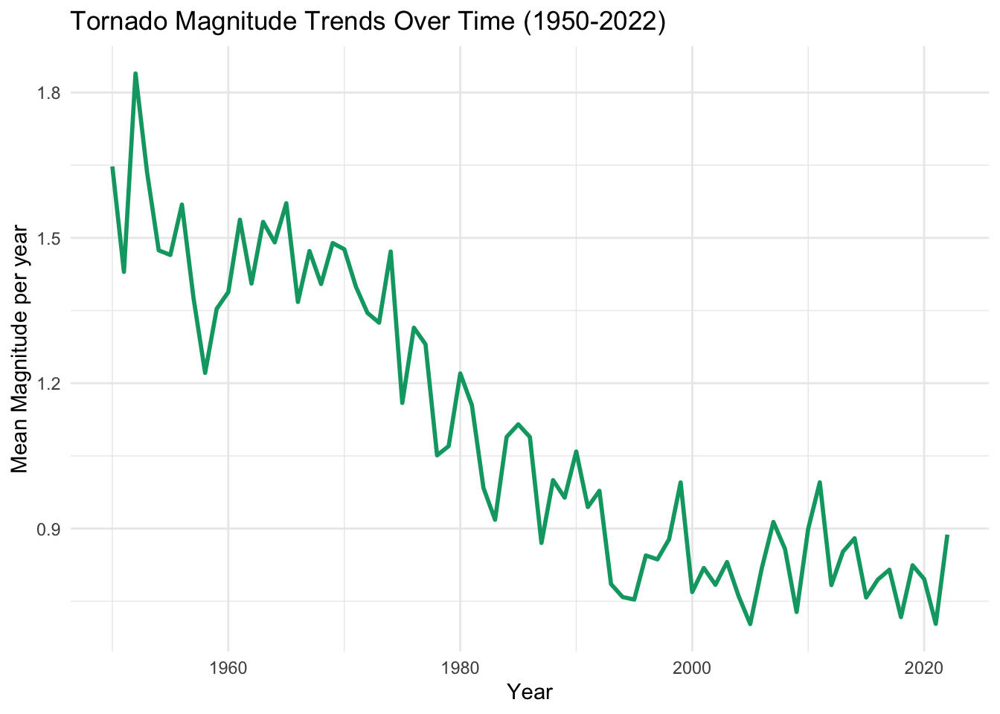
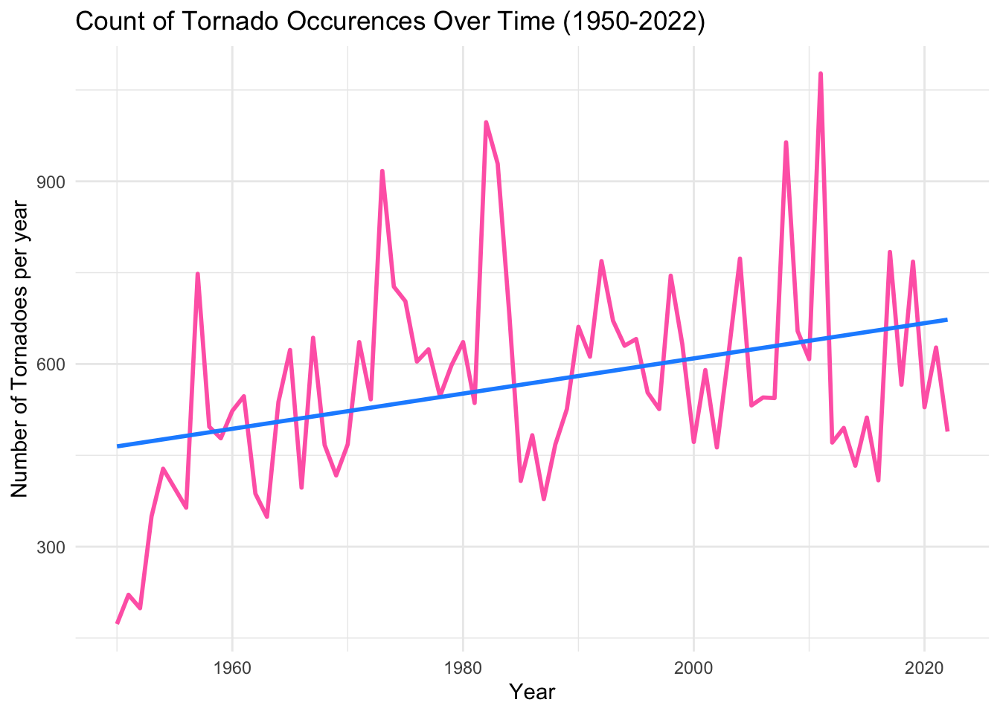
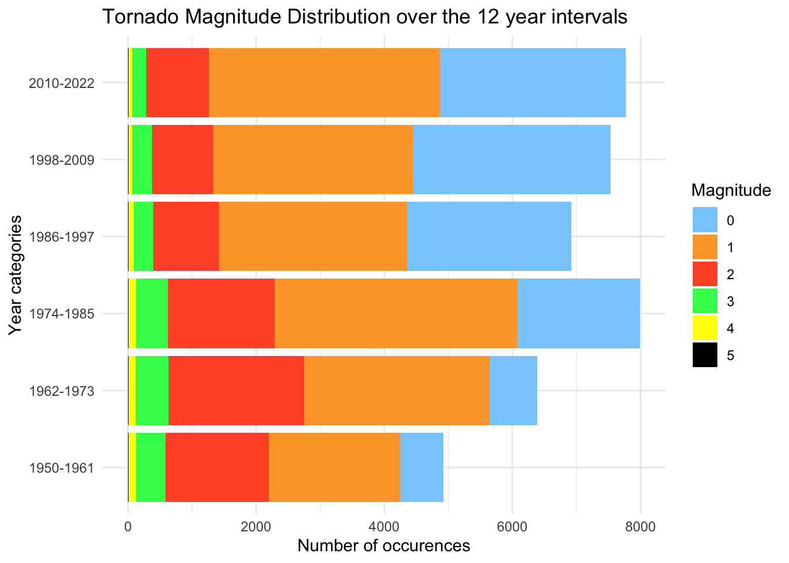
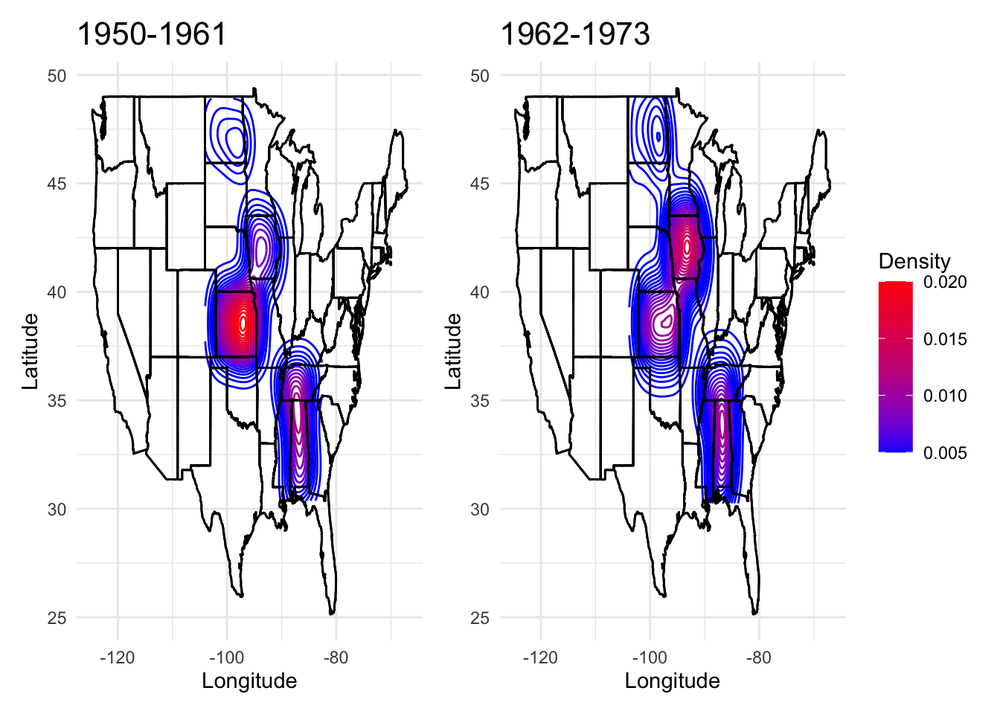
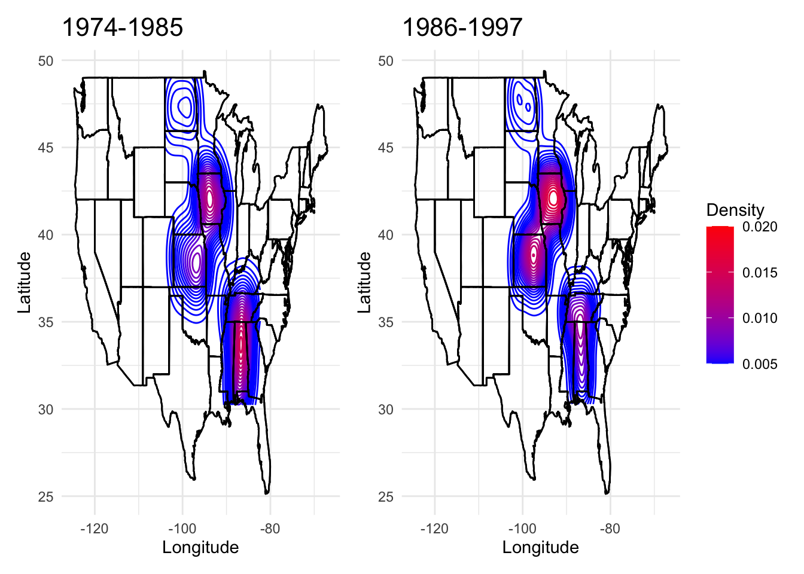
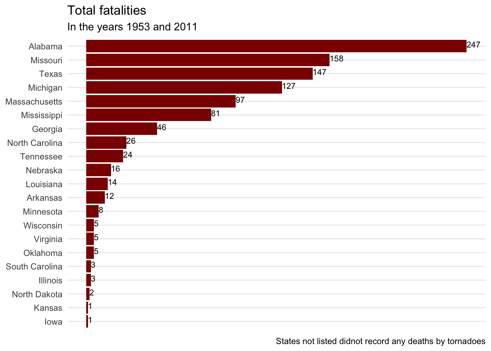

INFO 526 - Project 1
This data visualization project centers on unraveling patterns in tornado occurrences and their impacts across the United States. Tornadoes are violent, rotating columns of air that form severe thunderstorms capable of producing destructive winds. In this project we delve into two critical aspects: tornado magnitude patterns and the tornado related fatalities in each state . Through innovative visualizations like alley maps and horizontal bar plot, we seek to provide a clearer understanding of tornado phenomena, enabling informed decision-making and proactive disaster management.
This tornadoes data comes from NOAA’s National Weather Service Storm Prediction Center Severe Weather Maps, Graphics, and Data Page. It is also available on the tidytuesday github page. The data has 68,693 rows and 27 columns, including numerical and categorical variables. It equips us with a treasure trove of information spanning over seven decades that is from 1950 to 2022.
To gain a deeper understanding of these tornadoes, we delve into this data containing variables such as ‘magnitude’- the magnitude of tornadoes , ‘state’ -the state in which the tornado occurred, ‘fatalities’-number of deaths for each tornado, ‘year’- the year in which the tornado occurred, ‘slat’- starting latitude, ‘slon’-starting longitude, ‘elat’- ending latitude, ‘elon’ - ending longtitude.
Understanding the variations in tornado intensity is vital for assessing their potential impact and devising effective disaster response plans. In this section, we explore the patterns in tornado magnitude concerning geographical location (states) and how they fluctuate across different times of the year. The variables that are necessary to answer this question are “yr”- year in which the tornado occurred, “st”- the state in which the tornado occurred, “slat”- starting latitude, “slon”- starting longitude, “mag”- magnitude of the tornado.
Analyzing whether certain regions are more prone to producing stronger tornadoes can contribute to a better understanding of tornado dynamics and the factors that influence their intensity. For instance, if there are regions where stronger tornadoes are more likely, it could lead to targeted preparedness efforts and resources being allocated to those areas. This question is therefore of great interest as it has practical implications for both disaster response and mitigation strategies, ultimately aiming to reduce the impact of tornadoes on communities and save lives.
To investigate potential patterns in the magnitude of tornadoes based on location and time of the year, we will employ three distinct types of plots: two line plots and a grouped bar plot and an animation consisting of density plot. The first line plot will depict the trends in mean tornado magnitude over the years, offering insights into potential shifts in the intensity of tornadoes gradually from 1950 to 2022. The second line plot shows the count of tornadoes over time with a trend line(using geom_smooth) to show the overall trend in the plot. The use of a line plots allows for a clear visualization of any long-term variations in tornado magnitudes.
Additionally, we utilized a grouped/stacked bar plot to illustrate the distribution of tornado magnitudes across the different 12-year intervals. In this plot for each 12 year interval it shows the tornadoes occcurences and the count of the tornadoes for each EF scale rating(from 0 to 5). This plot is suitable for comparing categorical data across multiple groups, as it provides a visual comparison of tornado occurrences within distinct magnitude categories.
By combining these two types of plots, we aim to comprehensively explore potential patterns in tornado magnitude based on both temporal and categorical factors. This approach allows for a nuanced analysis, considering both the annual trends and the broader distribution across specified time intervals.
Then lastly for the animation of contour plots, we first grouped the data state-wise and summarized the standard deviation of magnitudes for each of the US states. Then we selected top 5 states from it and used it for generating contour maps for tornadoes in the selected states (Tennessee, Alabama, Iowa, Kansas, and North Dakota) over distinct periods (1950-1961, 1962-1973, 1974-1985, 1986-1997, 1998-2009, 2010-2022). This allows us to observe how tornado density patterns have evolved over these years. We choose the contour map plot as we have spatial data and contour plots are best to showcase the density patterns.






The first set of visualizations, that is the line plot, is focused on tornado magnitude trends over the years. We observed fluctuations in the mean tornado magnitude per year, with peaks and valleys throughout the decades. We can see that the intensity of tornadoes decreased as we moved forward from 1950 to 2022 gradually. From the second line plot we can see that the count of tornadoes increased over time slightly. The trend line in the plot shows this increase effectively from 1950 to 2022. So, from these two line plots, we could say that there were few but intense tornado in the late 1900s while there were more but less intense tornadoes today.
Furthermore, examining tornado magnitudes in different categories (EF scale) across distinct year categories (1950-1961, 1962-1973, 1974-1985, 1986-1997, 1998-2009, 2010-2022) through a stacked bar plot illuminated the distribution of tornado intensities over time. It interprets that as the time progressed the intensity of the tornadoes decreased, but the number of tornadoes increased.
For the contour maps, we can see the variations in tornado density for the states “Alabama” “Iowa”, “Kansas”,“North Dakota”, “Tennessee”.
Tornadoes, besides causing property damage, often result in injuries and fatalities, making an analysis of their impact crucial. In this section, we focus on understanding the trends in fatalities caused by tornadoes across various states in the United States. To address this query, it is essential to focus on specific components of the dataset, such as the yr-the year in which the tornado occurred, st- state in which the tornado occurred, and fat- deaths caused by that tornado.
Firstly, understanding how fatality rates have changed over time provides crucial insights into the effectiveness of disaster preparedness and response efforts. It helps in evaluating the impact of various safety measures and policies implemented over the years. Additionally, as climate patterns continue to shift, studying these trends can offer valuable information for adapting strategies to mitigate the human toll of tornadoes in the future. Ultimately, this analysis holds the potential to save lives and enhance the resilience of communities in the face of these natural disasters.
To address the question regarding trends in tornado-related fatalities, we employed an area plot and a bar plot. Firstly, we utilized a area plot to visualize the general trend in the total number of fatalities over the years from 1950 to 2022. An area chart provides an effective representation of cumulative or aggregated data over a continuous range, making it ideal for showcasing trends and variations in a data over time. It allows us to observe the cumulative total of fatalities increasing over the years. Each point on the chart represents the cumulative sum of fatalities up to a specific year, providing a clear visual indication of how the fatality count has evolved.
From the area chart we saw that there are 2 peaks in the years 1953 and 2011. So, we employed a bar plot to investigate the total fatalities for those years in each state. The horizontal bar chart excels at facilitating comparisons between different categories, which in this case, are the individual states. Each bar on the chart corresponds to a specific state. The length of each bar directly corresponds to the number of fatalities, longer bars signify higher fatality counts, allowing viewers to readily grasp the relative impact of tornado-related incidents across different states

In the given analysis, we observe notable trends in tornado-related fatalities over the years. The area plot depicting total fatalities over the years shows a fluctuating pattern, with peaks and valleys in different periods. There was a peak in the year 1953 resulting in a total of almost 500 deaths in that year. After this they were random peaks and troughs from 1960’s to 2010 . There was another noticeable increase in fatalities, with a peak in 2011, it is similar to the peak that occurred in 1953. In recent years, from the mid-2010s, there seems to be a slight uptick in fatalities.
The horizontal bar chart illustrates the total fatalities for select years (1953 and 2011) both years combined across various states. It reveals significant disparities in fatality counts, with some states experiencing much higher casualties than others. For instance, Alabama, Missouri and Texas are the top 3 states that has the highest death counts.
The data looks the way it does is most probably because in 1953, the deadliest tornado in the United States occurred on May 11 in Waco, Texas.In 2011, the deadliest tornado occurred on April 27. This outbreak produced a series of extremely destructive tornadoes across several states, including Alabama, Mississippi, Tennessee, and Georgia. The most devastating tornado was the EF5 tornado that struck Tuscaloosa, Alabama. The observed trends in the analysis align with the historical data for these years, with 1953 and 2011 standing out as particularly deadly years due to these catastrophic tornado events. The significant impact of these specific tornadoes in Alabama and Texas likely contributes to the notable spikes in fatality counts observed in the analysis.